As always seems to happen to me, the trip does not get off to a good start. One of the straps on my Osprey backpack, foolishly purchased the day before I set off, snaps at Earls’ Court tube station, barely half an hour from home, on the way to the airport, and the bag slumps low down on my back, dragging me backwards under the heavy weight of the carry-on luggage, all the way to the airport. When I finally wave goodbye to Mum after many hugs, trek out to the next terminal at Heathrow for the plane to Johannesburg (flight 1 of 3), and sit down, there are more problems: I am next to two very young kids (for an overnight flight this does not bode well), and more seriously, when it comes to our departure time, the plane doesn’t go anywhere. We sit restlessly as the pilot makes an apology, then says, “of course, all the French air traffic controllers are on strike”. “Of course” - I should have known. After 2.5 hours on tarmac we finally crawl down the runway and take off. I sleep very poorly, worried about missing my connection on Johannesburg (which I now have only 30 minutes to catch), and the child asleep on my lap, whose preciously quiet slumber I don’t wish to disturb.
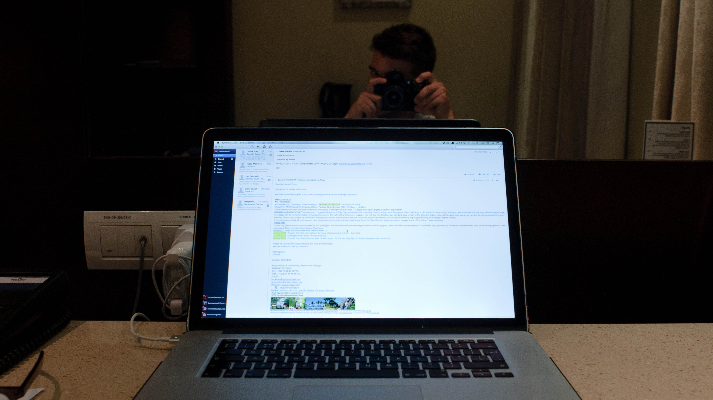Sure enough, I miss the connection in Johannesburg by 10 minutes. Trapped in the weird post-security area of the airport, the airline consoles me with a hotel room for the night, free meals, and the same plane tomorrow to Antananarivo, Madagascar’s capital, but it is of little use - I have missed my chartered flight to Anjajavy, the hotel and massive private wildlife reserve that is my final destination. So for a day I mope around inside my hotel room, catching up on watching films, unable to breathe fresh air, use any proper cutlery, or see the outside world, due to the airport regulations. Next day’s flight is nearly half full of players from the Namibian rugby team - as they squeeze their broad frames into the seats I wonder if we will ever manage to take off with all the extra weight! But we do, and land safely in Tana a few hours later. From the air the extent of deforestation and climate change is clear: the country is a dark red colour, rather than the green of the forest it should be, and on the ground the air is dry and warm.
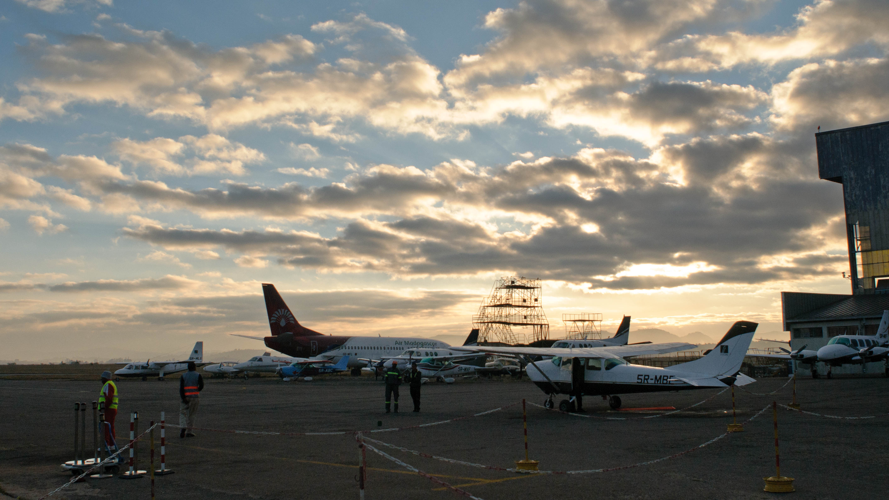After another two agonising days cooped up in a hotel in Tana, I finally leave early for my flight to Anjajavy. The streets of Tana are busy even at 5:30am - everything from runners following each other down the dusty and broken pavements to ox carts full of supplies, and countless buses with place names in the window I can barely read - the Malagasy language is long and consonant-heavy. The tiny four-seat plane sputters along the runway and up above the clouds, and two hours later dives below the clouds, and falls sideways onto the tiny dirt runway. Afterwards the pilot just says, “it was very windy for the landing”, trying to look calm. Anjajavy is just as I remember it, the view out onto the azure of the ocean, the generous shade from canvas umbrellas onto the dark, smooth wood of the deck, the deep greens from the well-watered gardens that surround the lodge.
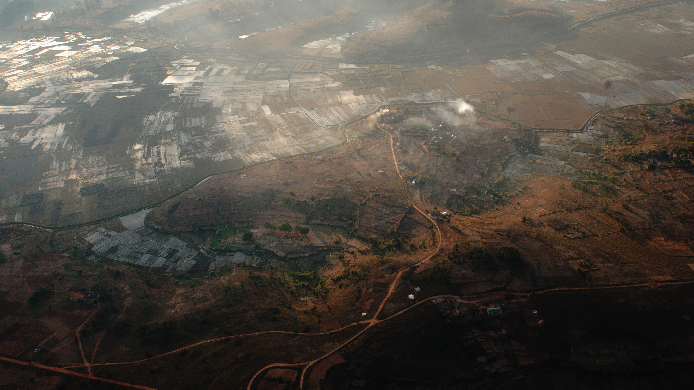 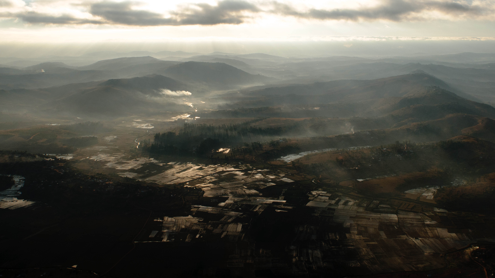 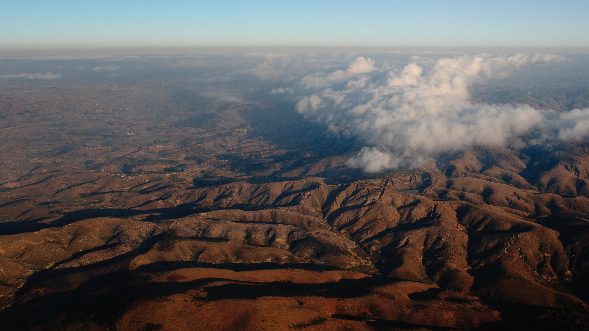 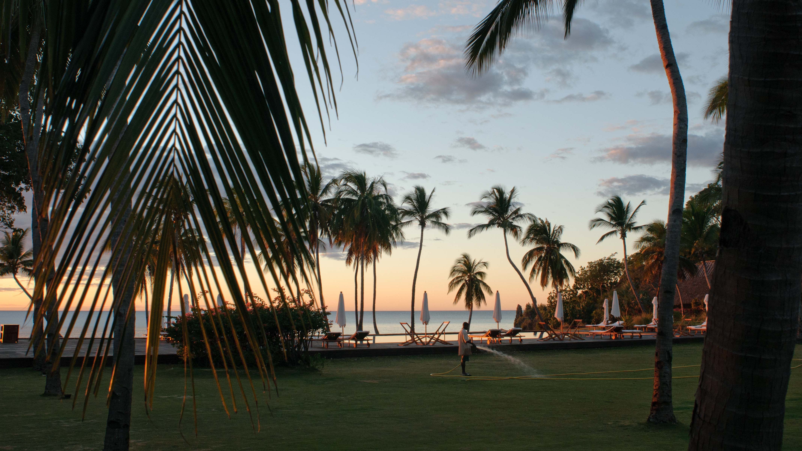There is only one guest at the lodge, an American called Terry, who has a kind face, a good laugh, and a set of stock phrases, his favourite being, “I’m telling you right now…”. I’m unsure of his background, until he says, “this is my last week, I’ve already been diving with Sharks in South Africa for a week, and done the migration in Kenya for a week”, and then, “it’s a nice break from Afghanistan”. I tell him about the structure and function of insects’ compound eyes, and everything from my exams comes rushing back in a tidal wave of niche knowledge, and then I worry I’m boring him, but he seems to remain interested, and nods slowly. The manager, Cedric, proudly says that there are currently 120 staff working at the hotel, and that as the only guest he has the highest employee to visitor ratio in the world! It is not so hard to believe. After lunch I stroll up to the next bay, through the dusty, spiny forest. Halfway through I see a movement in the trees, and there they are, the animal I’ve come here to study for 9 weeks - the round, staring face of the Coquerel’s Sifaka, a wooly, slender, gorgeous lemur. It peers at me, as if short-sighted, and then I peer past it, and see one, two, three (and maybe four?) more, peering back at me, making a low throaty noise to communicate with each other, legs tucked up to their chests, with their beautiful chocolate-and-white pelage surprisingly well camouflaged against the greens and browns of the forest. They move slowly above me, in long effortless leaps and slow ascents and descents of small trees, always calling to each other, always turning to stare at me when I make any noise. Thankfully, they seem unconcerned by my presence.
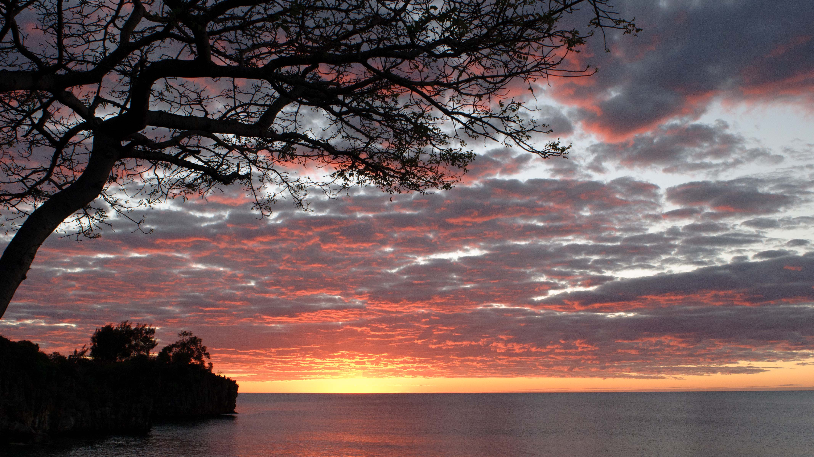 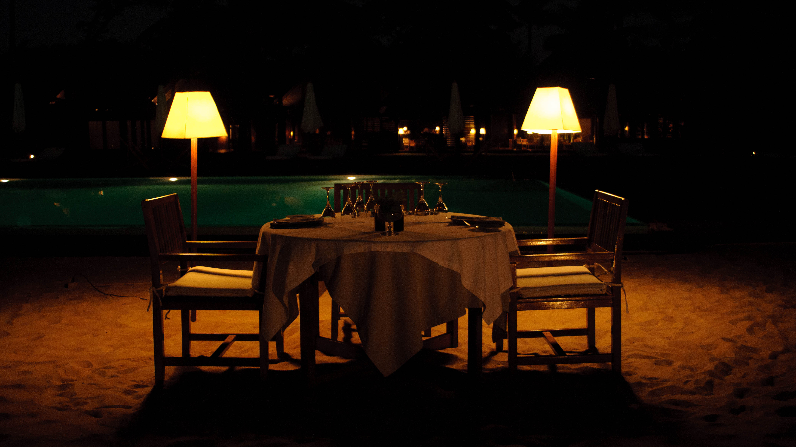Later, further on up the next bay, the sun starts to dip, and I hurry back towards the camp. The sunset is sensational, the dark blood-orange ball of light slowly descending towards the dark sea, with riffled clouds dyed red as it dips lower, lower, and then out of sight. The afterglow is spectacular, and even as I stumble back through the dense forest, path illuminated by the feeble beam of my headlamp, the last rays of crimson spread through the trees. We eat on the beach, with a crackling fire near the table, and the waves lapping up the beach in the background. It is a magical evening.
The next day, we visit the nearest town, also called Anjajavy, home to 2000 Malagasy. It is set on the bright white sand somewhat up from the beach, and each house follows the same basic plan: roofs thatched with palm leaves, walls from dry brittle wood, and a low overall height to protect against the terrible storms of the monsoon season. I stoop inside one: it is dark and smoky, and fingers of light peer in through the cracks between adjacent palm fronds. The kids at the school seem genuinely pleased to see us, and as I show them photos of Cambridge, they crowd round, silently bemused, pulling on my sleeves for a better view of the panelled halls and stone buildings that are quite literally half a world away. Outside one boy shouts, "photo, photo!", and I lean down to take one. He pulls the most gangster pose I've ever seen.
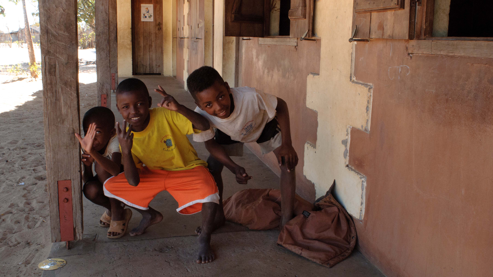In the afternoon, we visit one of the many caves that dot the limestone-rich area of forest around Anjajavy. From the trail head it is an easy walk through a kilometre or so of mostly untouched forest, characteristic of this region: although there is a high plant density, most plants are thin with few leaves, almost as if they have been emaciated by the long, hot days that come after the lush rainy season. The trail winds up and down to the cave’s entrance, and donning helmet and headtorch we clamber down and peer in. Tiny bats, including the world’s smallest species, flitter away from our beams of yellow light, and spiders slowly clamber away from the human intruders through their intricate webs. My torchlight catches a splendidly marked gecko by surprise, and it scampers some way off, its suction-like feet giving it incredible grip across the shiny surface of the stalactites.
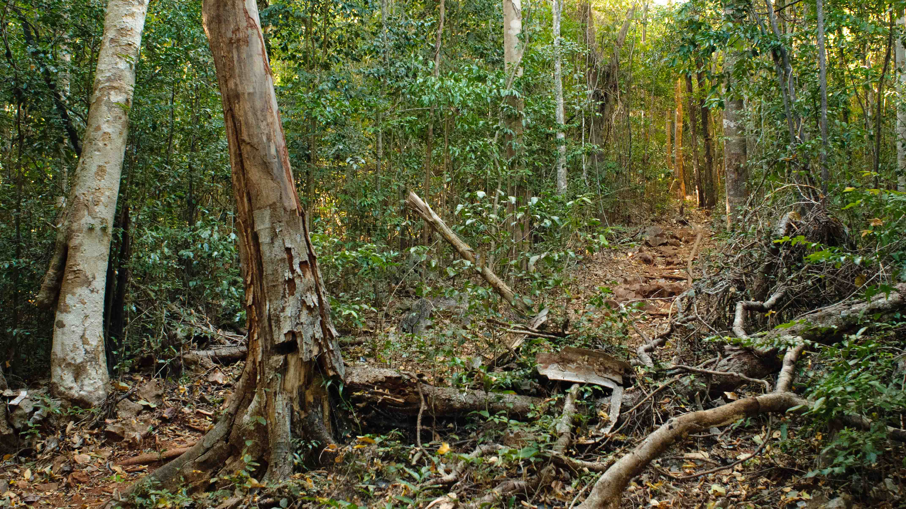 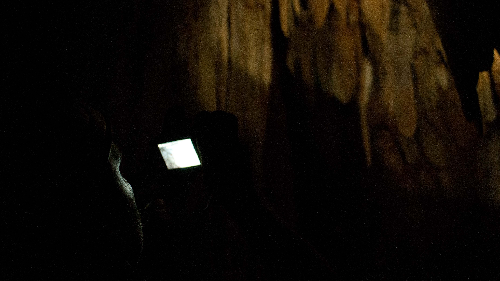 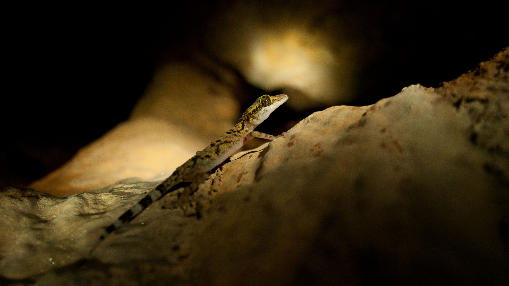Coming back to the lodge, the light suddenly changes to a surreal warm orange, splitting the canopy with a similar beauty to the previous days’ sunset. I go down to the oasis and watch the two lemur species that frequent this area: the smaller and noisier Common Brown, and the larger fluffy Coquerel’s Sifaka. The Browns honk quietly whilst following each other across the grass and along branches towards the beach, whilst the Sifakas rest higher in trees, eating lazily and occasionally giving me their trademark short-sighted stare.
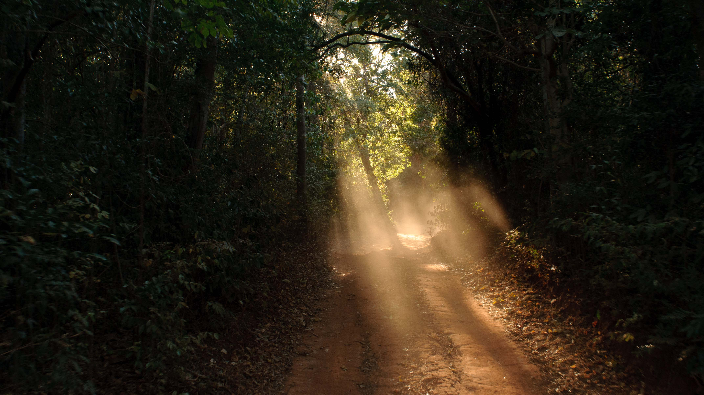 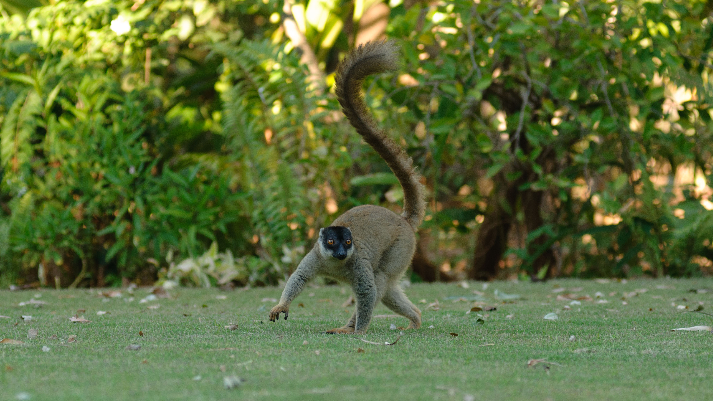 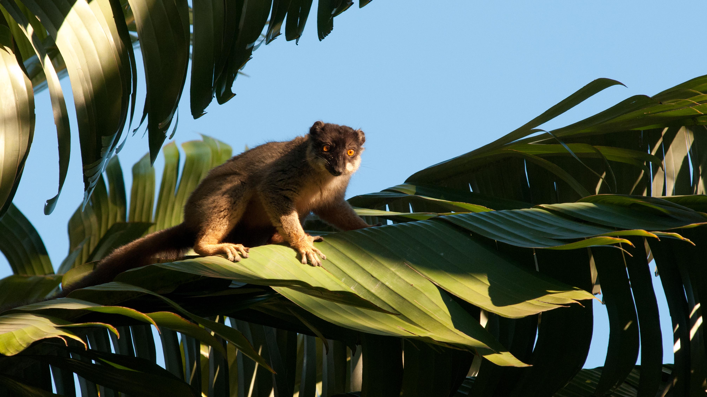 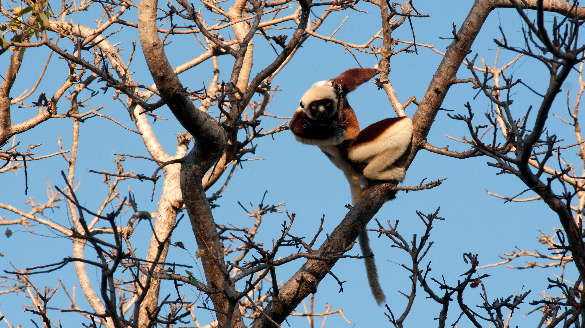The sunset is as tremendous as last night, and afterwards Terry and I head out for a night walk. For me, you can only truly experience the feeling of a wild forest at night - the huge variety of insects that flutter through your torch beam, the hissing and rasping of the cicadas and grasshoppers, and the incredible variety of calls, from eery to comical, of every animal in every different context. All of these are present tonight, and we see a good selection of nocturnal fauna too - the tiny Panther and Long-Nosed Chameleon species, a glimpse of the elusive Scops Owl with its haunting "brou brou brou" call, the tiny and incredibly active Golden Brown Mouse Lemur, and the Sportive Lemur, with its characteristic white-tipped tail. Relying solely on eye-shine from our torches, spotting each individual is hard work, and it is so dark I can only photograph one Mouse Lemur successfully, before it scurries off to feed furiously again.
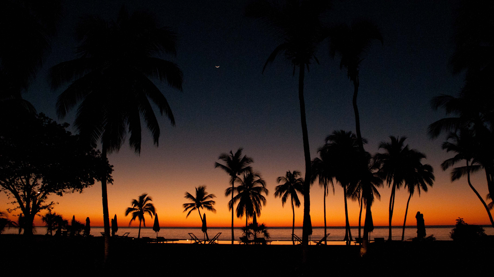 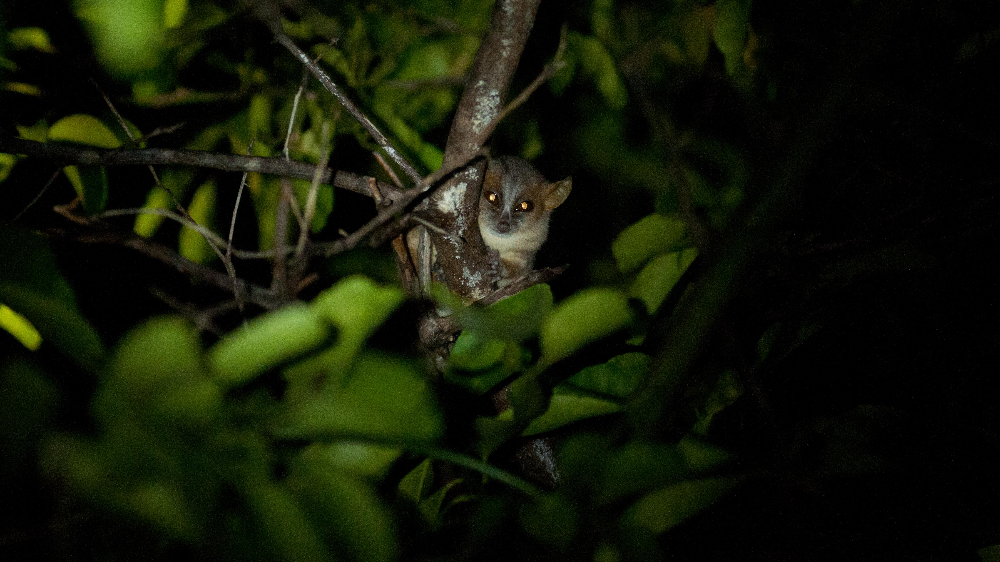The next day is windlessly hot inland, and we take the boat out to Moramba Bay, a natural harbour some 30 minutes from Anjajavy. The boat skims over the small azure waves, as flying fish flutter above the surface, and the sea's colour deepens to a navy, almost an indigo, as the wind picks up offshore. We cross just behind a fishing boat returning from its morning excursion, crewed enthusiastically by a large number of boys from a small town further down the coast. The crescent-shaped sail billows in the building breeze, and the narrow hull and single outrigger cut through the waves back to shore. The light is high and harsh, and I can't really photograph the other birds we see - a Diver known locally as the "Snake-Bird" (something akin to a cormorant) who struggles up onto a rock to dry its feathers after a morning of fishing, and two critically endangered Madagascar Fish Eagles, one fully grown, and one juvenile who surveys us from a dry branch disapprovingly. The rotund baobab trees which dot the eroded limestone islands of the bay cling perilously to the bare areas of rock, and it's hard to believe there's enough soil, water or nutrients to keep them alive at all.
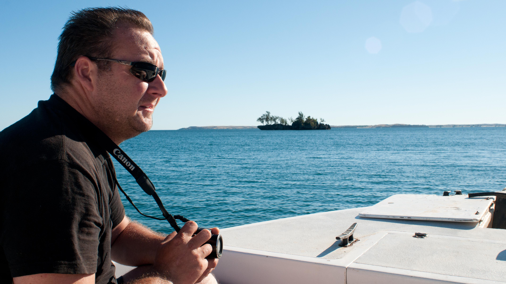 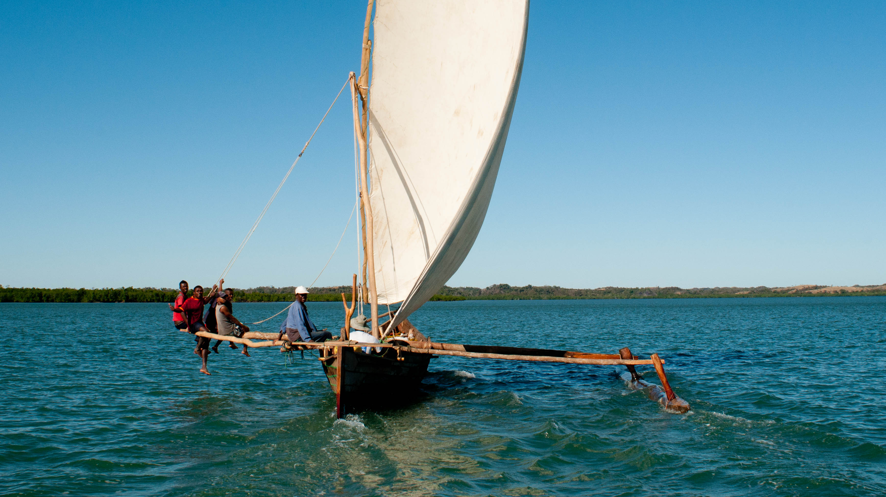After lunch I take a walk round the creeks and bays that dot the promontory to the West of the hotel. It is very hot and windless; I walk fast through the sparse shade from the spindly trees above, pausing occasionally to investigate whether an arboreal rustle is a lemur, or rather just a stack of dry leaves being shed. On the return leg of the walk, I walk through damp, soft sand on a narrow path between knee-high mangrove beds, rather in the fashion of a botanical Moses, and then high up through rough-hewn steps in the terracotta earth. I don't see a single animal in the entire trip. Thankful for a more passive form of adventure, in the evening we take another boat trip, this time to the mangroves to the East of the hotel. Earlier at low tide, the round, succulent leaves of the mangrove plants were visibly supported by an amazing umbrella-like structure of dark brown roots, but now, as the boat glides through deeper water and more established mangrove beds, the leaves flutter and bend in the sea breeze, and furrow the rivulets of incoming tide flowing past. Max, the nature guide, claims to see a manta ray drifting beneath the boat, but neither Terry nor I can see any sign of it, and no more potential or actual wildlife encounters occur. Despite this, there is still a joy in drifting through ever-narrowing passages of vegetation, with the orange-red last rays of the sun lapping on the water. "Just like Florida, 'cept for a smaller scale, and there aren't those darned mosquitoes everywhere", says Terry.
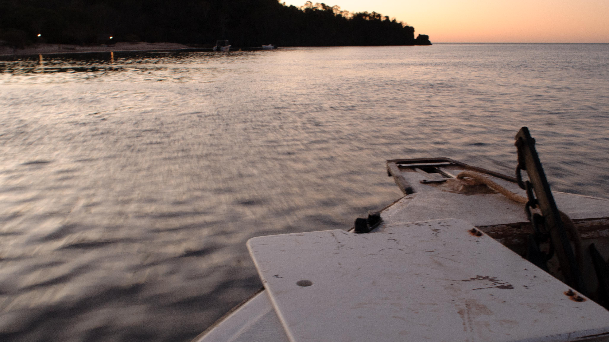Terry leaves early the next morning, with a firm handshake and a hearty laugh, and I spend much of the day inside, cooped up with research into everything from the structure of the tapetum lucidum to the difficulties of sexing an adolescent Sifaka. Later on I go out to the oasis at teatime to put my hypotheses of sexual dimorphism to the test, and there they are again, crowded up together in a silky grey mature tree. I stare through my binoculars again at them staring at me, but they are too high, and turned against me, concentrating on eating noisily, and I can't tell the colour of the gular (throat) sac, supposedly the easiest way to differentiate male from female. Later, when the guests disperse from tea to prepare for dinner, and the sun dips lower and lower, I follow the group of what I presume to be 6 (but later turns out to be 8 - their brown-and-cream coat is surprisingly effective camouflage amongst the russet foliage), GPS in hand, for the first stage of my research. Every 5 minutes I note down their exact coordinates, and what they have spent the majority of the past period doing. I track this group for about 40 minutes, as they divide their time between foraging, travelling, and resting, in a lackadaisical approach to the issues of finding food and staying together. Eventually a large troop of the noisier Common Brown lemurs arrive from the North, and whilst the Sifakas at first seem unconcerned, when a couple of Sifakas (presumably from a different social group) arrive behind the Brown lemurs, all hell breaks loose, and my group dart away into the thicker forest to the West. I watch through my binoculars, focusing furiously and just managing to catch their characteristic bounding pattern between the trees. I look at my watch, and write in my notebook: "6:41 - move quickly to W after encountering 2xAd. from N."
One of the new arrivals, an English man called Nick, tells me about his life over the next day's breakfast. It is quite a life: after several decades in publishing, he has saved up enough to tour the world overland, and duly does so, for 2 years. He reels off the place names - some I've heard of, and others I've not conjure up pictures of warm sandy beaches or distant mountain tops - and then explains he has made it his life's work through starting a tourism agency, working for 9 months and travelling for 3 months to investigate new locations - "business". He is here, like so many others, at the end of a long trip to Madagascar, and seems glad to have company, kindly inviting me on a fishing trip that afternoon. I am gracious, but unsure whether to accept it - in the end I do, as I doubt I'll have many other opportunities to go out fishing, and he seems to know his stuff. My suspicions are confirmed when we get on the boat, and he gives me a rundown of our plan, "We're trolling [he elongates the "o" sound carefully]. Very simple. The lures go behind the boat, and we motor off slowly. You'll pick it up quickly. It's not popping - now that's real sport! I'll try and go popping later this week." We blast down the coast for a while, and then stop in a seemingly unassuming patch of 4m-deep water. Then 4 rods are slotted into the back of the boat, each with a tremendous reeled length of translucent line. Sure enough, it is simple - the lures are set at a short distance, the boat motors slowly, and within a minute there's a tugging at one of the hooks, and the black rod tip is yanked backwards. Nick springs to life, one of the guys straps a rest for the rod's butt onto him rather like a bumbag, then he slowly reels in the fish, which turns out to be a sizeable Barracuda as it breaks the surface. Then there is the unglamorous part, it is hooked through the abdomen with a "gaff", dumped unceremoniously on the floor of the boat, and the two barbed hooks removed forcefully, whilst a trickle of crimson blood runs from the intricate gill arches down the slippery white deck. "Photos at the end", Nick says, and it's chucked somewhere in the front of the boat.
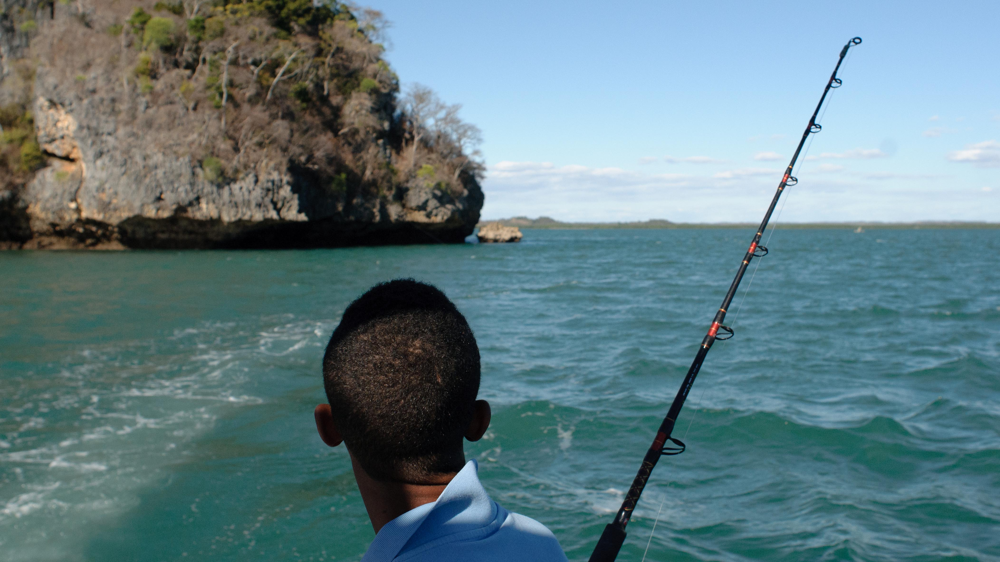 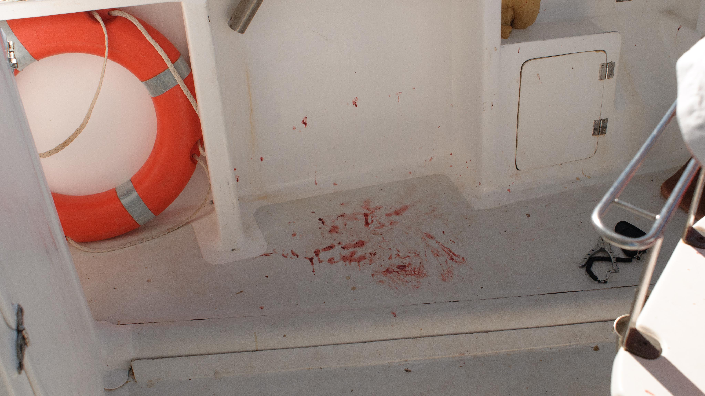The next one is mine, and it's not much different. I strap the odd plate on my front, rest the rod's butt there, and alternate between pulling up slowly and reeling in fast but smoothly whilst the rod tip descends. The gearing of the reel, the quantity of the lures in the water, the range of fish available just below the surface for the taking, all of these conspire to make this form of fishing (somewhat ironically called "sport fishing") a pure formality. I turn the handle again and again, the line slowly comes towards me, until a few metres from the boat the beautiful iridescent silver form of a Kingfish breaks the surface, then dives below again. When it gets to the boat the same process is repeated: again its breaths get shallower and shallower, again the gills stop moving slowly, and again it is chucked forwards in the boat. I'm beset with a rather odd dichotomy; on the one hand, I find this easy plucking of graceful marine life hardly "sport", nor very enjoyable (although maybe good eating later), yet on the other hand, it is hard to complain ecologically about an infrequent fishing trip to an area that is certainly not being exploited unsustainably. On the bumpy trip home, with two barracuda, four kingfish, and two magnificent red snapper in the hold, I know I don't enjoy this type of fishing, but I can't decide whether I dislike it.
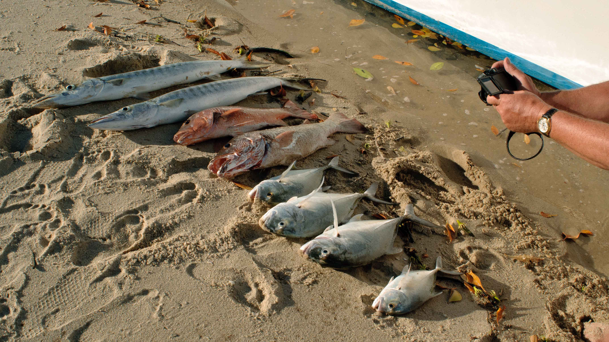It is Thursday 3rd July now, and judging from my Malaria pills I have had somewhere around a week here in Anjajavy. I have already written an entry for the past few waking hours, in an email back home:
"Today started out rather unassuming: I woke late, and worked on my presentation on the area’s wildlife for much of the morning, until the hot sun meant retreating even from the comparative haven of the shady armchair with the best internet reception. Then in the afternoon I was suddenly beset with the immense desire to do very specific things: I watched both episodes of Yentob’s excellent biography of Woody Allen all in one sitting, then went for tea at the Oasis, followed a group of one immature and six adult Sifaka for nearly two hours [one of whom I positively identified and named “Wedge”, on account of a missing patch of tail fur - this brought me a great amount of good spirits, as I had thought individual identification would be very difficult or even impossible] until they curled up into cream-and-chocolate bundles of primate sleepiness, swam four lengths of the pool in one go, then after a short rest, two more [I am determined to improve my meagre swimming skills during my long stay here - my resolutely terrestrial body still struggles with comfortable breathing in an aqueous medium, but I am progressing slowly], and a lovely shower with the dense background accompaniment of crickets scything, sportive lemurs blowing, and parrots cackling. Presently I also wish to find out whether a semicolon or a colon is best for the previous sentence, but alas am yet again without internet, so instead I will head for dinner to the jacaranda-floored veranda which gazes out over the Mozambique Channel. Best wishes to all, and love as ever, B."
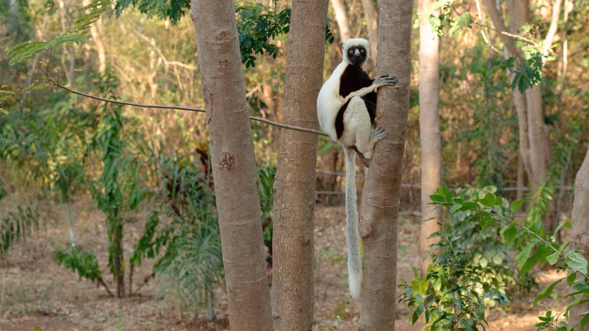Over the next few days I fall into some kind of regular pattern; waking early as the sun rises over the back of my room, and the forest still feels fresh rather than oppressively hot, going out to look for Sifaka groups early, coming back for breakfast, then doing some work inside or going further afield - a very sweaty job in the mid-morning heat - before lunch. Post-lunch both lemurs and people feel a bit lethargic, and I go out to track them from around 4pm to sunset at 6:30, which neatly coincides with tea at the "Oasis" - a lovely set of landscaped gardens around a small pond that attracts all kind of wildlife. With a final GPS coordinate recorded for an overnight rest, I go back for dinner, and hope that the Sifakas don't move until next morning...
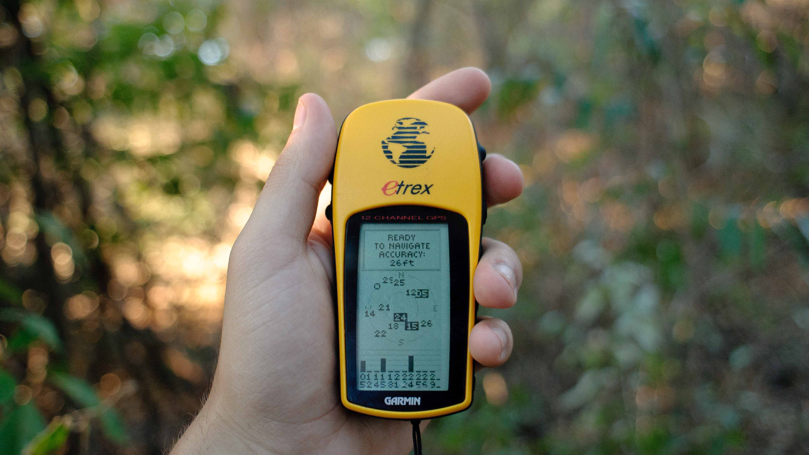One particularly windless afternoon I walk the headland path again, on the lookout for any fauna around. I come across not one but two Sifaka groups almost immediately, but they both seem very uneasy, throwing their heads back in the characteristic "distress call" that's most often seen in presence of a large aerial predator. I decide not to bother them, and move on quickly, ending up at a lovely secluded beach on Creek 4. The brittle black rocks that surround the turquoise sea, the scrubby plants that manage to hold on to the bare earth, and the array of tiny glimmering fish that skirt around the shallows make a truly Madagascan landscape, and I take a panorama before trying my hand at bouldering over the soft, hot sand.
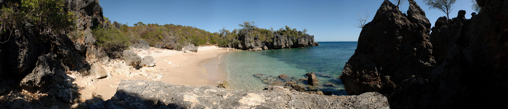On the evening of Sunday 6th, as I wait impatiently for the Sifakas to go to bed so I can watch the Wimbledon Men's Final (something I truly miss from home), they move further up the biggest tree around, and start feeding from the honeysuckle-like flowers of its prickly branches. They chew noisily, and stare at me whenever I release the shutter, and slowly work their way round as many flowers as possible, presumably enjoying the sugar boost that this diet gives them. Again I admire their unique physiology: prehensile hands and feet (but not tails) allow for an amazing versatility of gripping arrangements, and even on the rare occasions when they do miss a branch and tumble a few feet (before looking around with an air of embarrassment), a spare hand or foot quickly grabs a nearby limb.
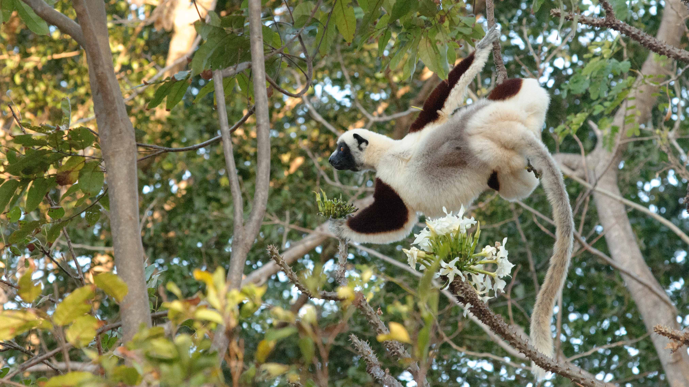 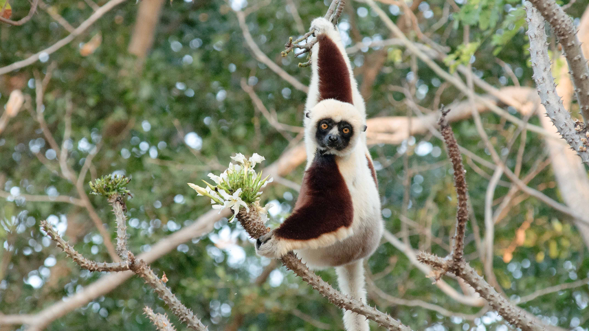Over the next week, a steady progression of guests arrives and leaves. I quickly tire of having to repeat the same answers to each new arrival, "S-i-f-a-k-a. No, their tails aren't prehensile. Yes, they live in groups of 3-10, with 4-5 being the most common. Almost, they also augment their plant diet with insects, and even bark during the dry season. If you look closely you'll see this one's missing some fur from the bottom of its tail, and the one higher up in the tree is a bit hairless after a fight with a ground boa last year." But then I put myself in their shoes, and it becomes more interesting again - plus there is always an oddball question, perhaps regarding unusual behaviour, or comparative physiology, or their phylogenetic position amongst all other primates [to answer this last query I scribble a hasty tree in my notebook, and hazard a guess they're quite basal compared to monkeys, chimps and gorillas]. My beloved "Teatime Group" of 7 continue to get along happily together, and seem to be very much creatures of habit, which makes tracking them a lot easier. After a particularly windy night I go out at dawn to look for them, and they're nowhere to seen (this does not mean they've come to any harm, rather that they're a bit deeper in the virgin forest than usual, and I can't get to them) but their neighbours, a plucky group of 4, are right on the forest border. As the dry branches crackle under my feet, and the first rays of the sun light the "king twigs" a deep orange-red, the four Sifakas stare back at me with equally sleepy eyes. It is quite a picture; evidently they've had quite a bumpy night of it, as they're in two groups of two, each pair wrapped round each other in a bowling-ball sized adorable package of lemur fluff and velvety feet and wrinkled noses and crinkled ears. They stay like that till I leave for breakfast, an hour later.
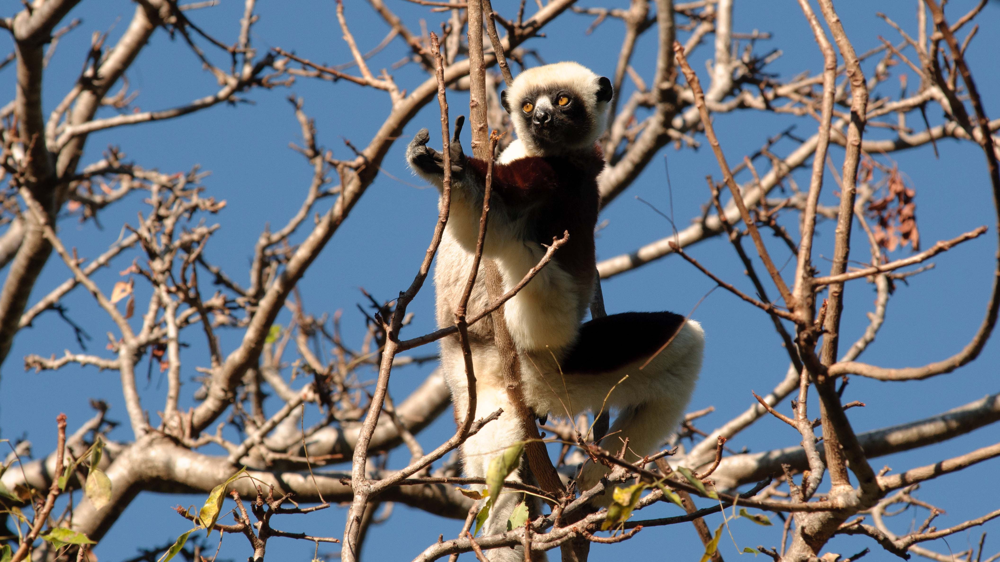 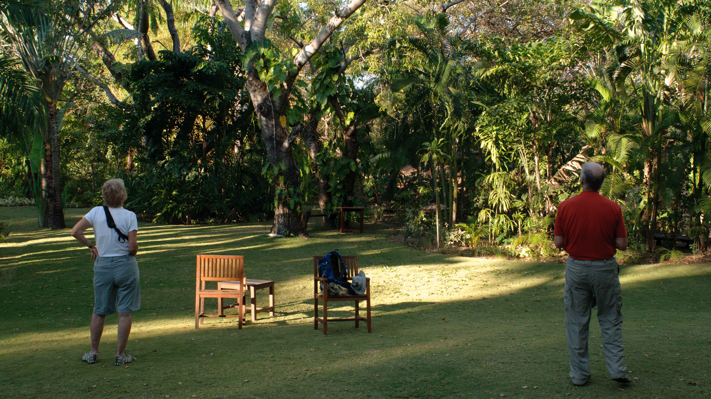Two groups of guests stand out, for quite opposite reasons. A three-generation group of nine Indians by descent (but now Singaporeans by residence) bring the horrible screaming sound of two badly-behaved young children to the complete tranquility of the oasis setting, and it takes a good amount of very British disapproving stares for the mother to shut them up. The father, for whatever reason, decides to engage me in conversation at lunchtime. I can tell within a very short time that this is someone with whom conversation will be a very trying process; he is the sort of man who thinks that, by virtue of subscribing to The Economist, he is a master of modern geopolitics and international business, who will not deign to acknowledge your point of view on a matter but instead, pointing his bored visage straight ahead, repeat the same point he has made thrice already, who will never admit a personal limitation, but be quick to criticise any of your own. I eventually realise why his wife left the table much earlier, and decide to allow him the honour of his own disfigured opinion, at the cost of his €400/night admission to this hotel. Later in the week, two American journalists join us (it later emerges they founded and work for Coolhunting, a rather popular online publication). They are quite unlike most Americans I have encountered here; genuinely interested in everything I have to say and knowledgeable about a good deal of it, concerned deeply about the long-term sustainability of the country, and eager to humbly try everything the area has to offer. We get on very well.
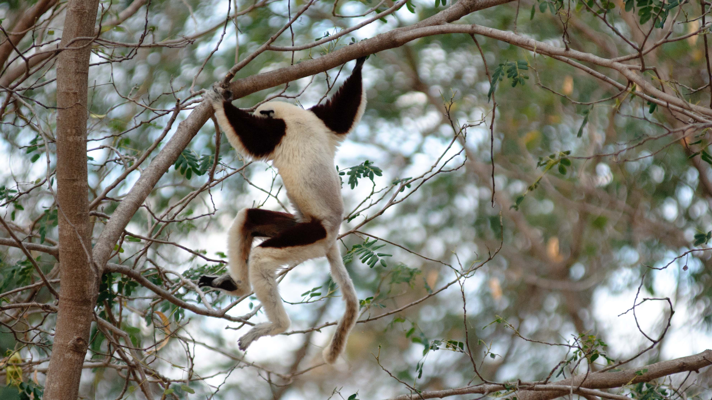 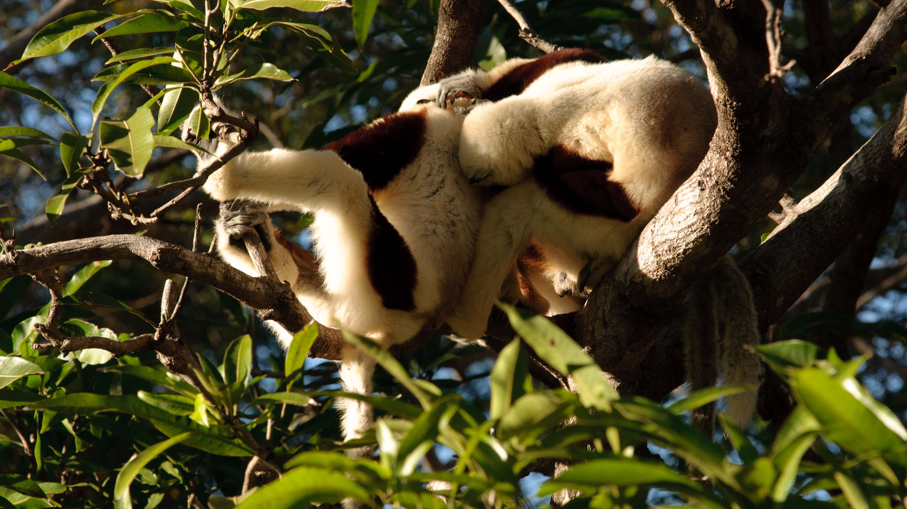The (as-yet unnamed) group of four Sifakas has another surprise in store. As they wander past the oasis in the gorgeous late afternoon light, I glimpse a small spindly hand emerging from inside a large female's chest hair....it's a baby Sifaka! The baby is tiny - it could probably fit in my palm - and can't be more than week old! She keeps it very carefully guarded, and with good reason, as this is the time it's most vulnerable to predators such as the stoat-like Fossa. The baby will have a further three weeks or so clinging on to her stomach, and then a further six comfy months on her back. It's a very special moment for me.
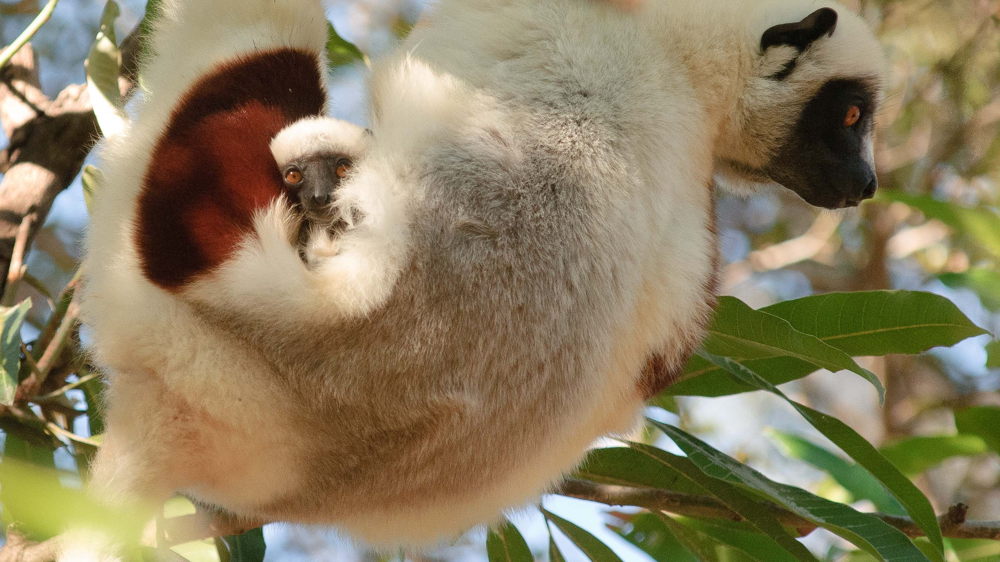 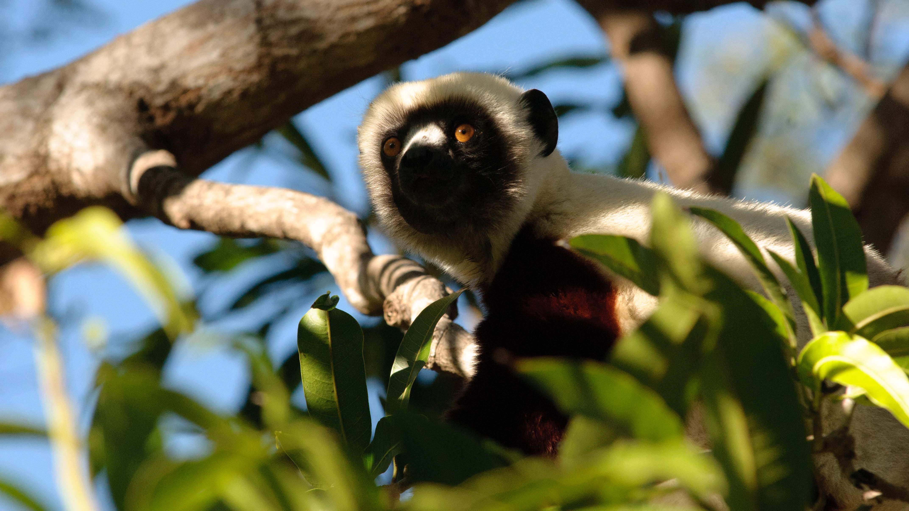The next few days are marked by some weather change - as a few more guests come and go, the wind picks up greatly throughout the days, and a small assortment of clouds stud the sky like rivulets against a piercing wind. I see two more amazing sunsets; one from the path above the beach, with long orange fingers of light signifying the path the dying blood-red sun has taken, and a beautifully wispy pink sunset from another evening boat trip to the mangroves (this time with two honeymoon couples, I always feel like I'm rather cramping their style). On the 18th a group of French businessmen from Tana come on their own flight for one night only - it is normally against hotel policy to allow people to stay for such a short amount of time, but Cedric allows this visit in the hope of attracting the return business of these compatriots. All the staff go to great lengths to make sure these four (obviously influential) guests have a good time; I see staff frantically polishing dessert spoons, and in the afternoon they come with me, two guides, and five other guests for a boat trip to Moramba Bay. I've done this trip twice before, but there are surprises in store this time: not only do we get to ride in by far the nicest boat the hotel has, ("Richard Branson was the last guy in here"), but we see a pod of dolphins (I think this is the first time I've ever seen wild dolphins!), a juvenile fish eagle very close to his nest (they are some of the rarest birds in Madagascar), and the guests tell me the snorkelling is excellent, with the exception of the tiny, near-harmless jellyfish that occasionally drift past. And to top it all, when we return to the oasis my "teatime group" is feeding, and a tiny Madagascan Kingfisher (like an even more colourful version of an English Kingfisher) is fishing in the tiny pond, a splutter of frantic wing-flapping and feather-shaking.
 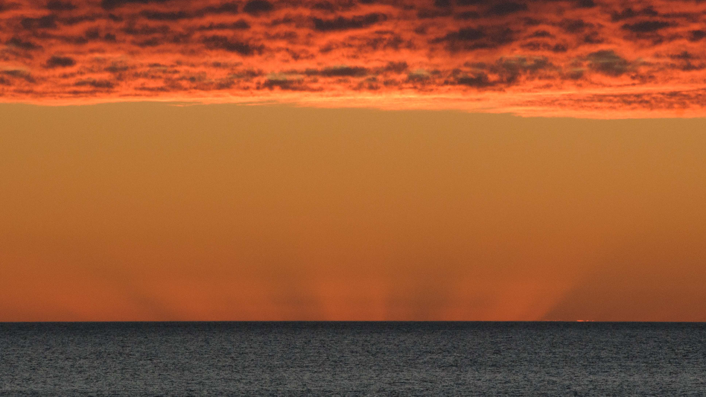
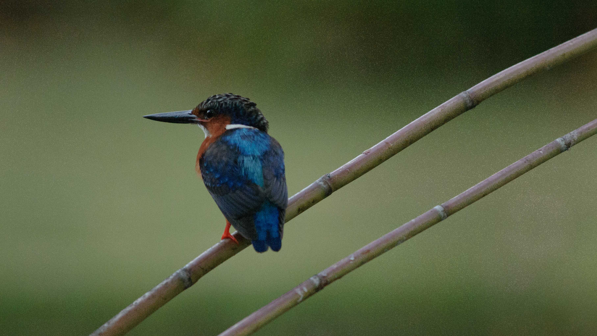
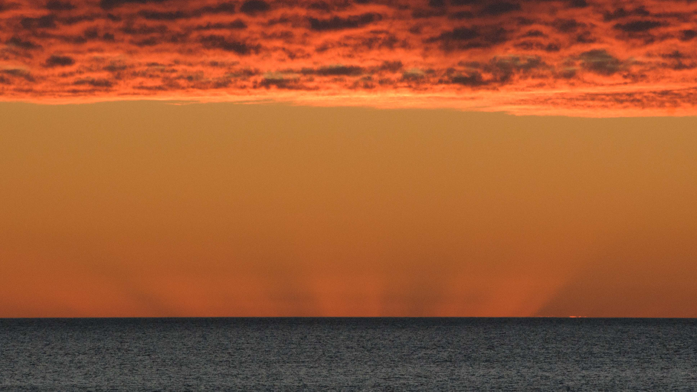
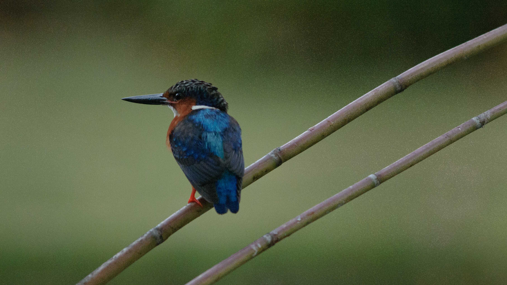
There is a surprise in store for my 5th week. Russell Mittermeier, president of Conservation International and world-leading lemur biologist, is visiting Anjajavy for two days with friends from CI and a famous American columnist. It is a bit like having Lennon (or McCartney) come to a music school, and sure enough he fits the stereotype of a hardcore scientist perfectly: fishing jacket with at least eight pockets, calf-high white socks, binoculars, camera, GPS, and machete strung around his neck, clutching a beautifully carved walking pole. He kindly takes an interest in me and my research, and I think we get on rather well, discussing the challenges facing modern in situ lemur conservation, the fate of the new president, and how to raise awareness of Madagascar's plight. He's visited Anjajavy several times before and naturally knows a good amount of the wildlife, so both conservation and wildlife-watching on our trip to Moramba Bay is excellent - we even see four Madagascan Fish Eagles (this represents 2% of the world's population!). When he departs two short days later (having autographed many copies of his authoritative field guide to lemurs), I'm sad to see him go, but thankful for his encouragement, directions on where to send my report for publication, and promise to keep in touch.
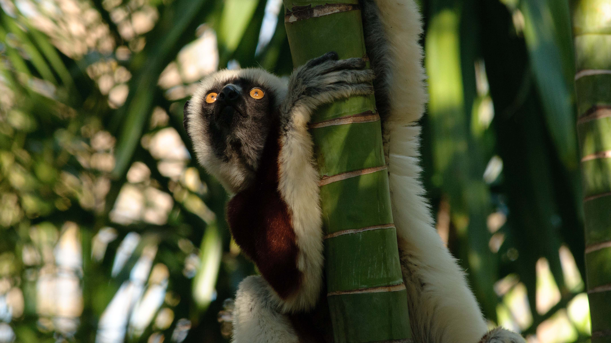My days are ever-increasingly spent worrying as to whether my project is going well or if I'm wasting this entire trip. Supervision of my project is a rather hands-off affair; I know pretty much what to do, and haven't had any real disasters so far. When I finally manage to knit together the perennially problematic code that is supposed to give me a home range value, it spits out a number roughly 10x smaller than what I was expecting. It's clearly wrong, so I resolve to redouble my efforts in the field - more data is never a bad thing. I tick off a few more of the reserve's walks in downtime, and begin to savour extended minimalist walks. I carry nothing bar a hat and glasses on my head and a watch on my wrist, and move quickly amongst the tsingy and along the cascading ochre dusty paths; "L'Allée des Rois, "De Crique en Crique, "La Balade du Géant". Breathing with my mouth closed to save water, walking fast in light shoes, and occasionally descending to a pristine bench or sitting on a fallen log in dappled sunlight for a short break, my thoughts wander beautifully; never before in my life have I had so much time to think, and it's a treat. When it rains for the first time in five weeks - a veritable assault from above of fat steely raindrops - I don my waterproof coat and walk briskly up to the end of the headland. It's an amazingly pure experience and I enjoy it perhaps more than anything else on this trip so far: as I'm sure the other guests wonder why a mad Englishman is out for a stroll with a massive smile on his face in the rain, I revel in the elemental feel of the dry forest under assault from above, the trickle of water that steadily runs off the brim of my hat, and the graphite-blue of the ocean from Anjajavy's northernmost point.
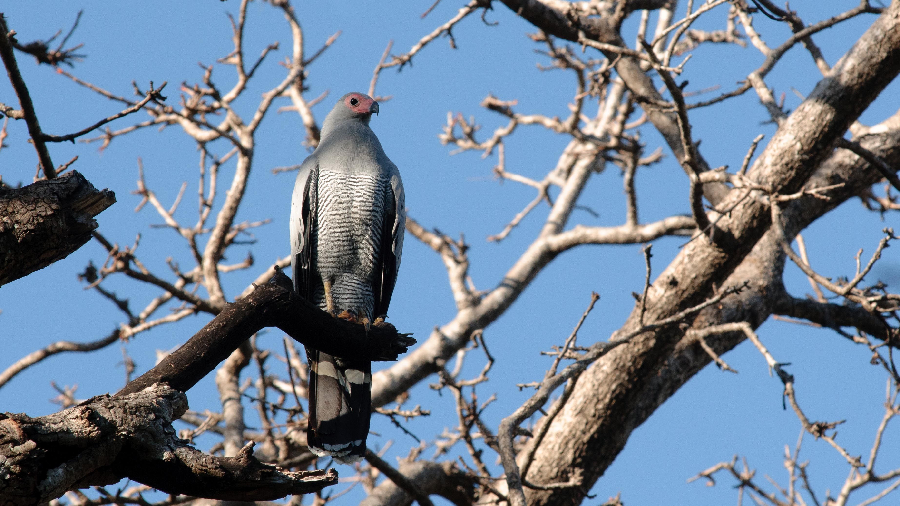